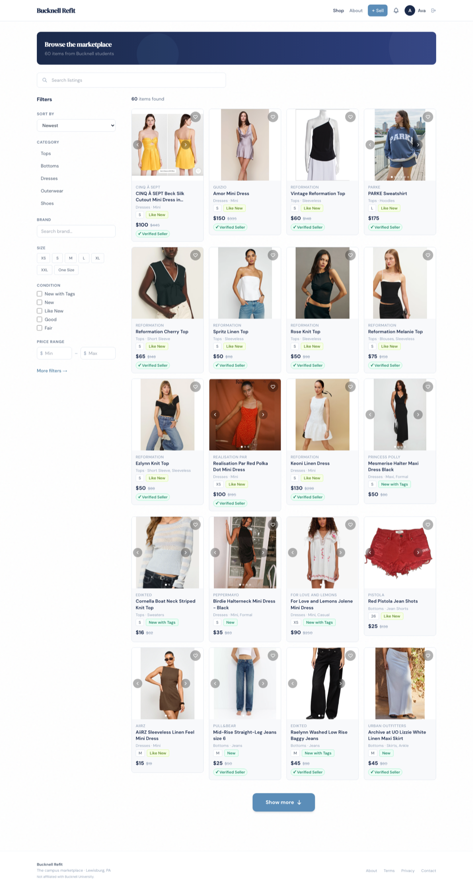

Founder Entrepreneurship · Marketplace
Bucknell Refit
A two-sided clothing marketplace I built for the Bucknell campus — on-campus pickup, no shipping. As a first-time founder I own the product, pricing model, and go-to-market, directing the build and integrating Stripe. Its standout feature: AI-powered listing auto-fill — paste a product link and the listing writes itself.
